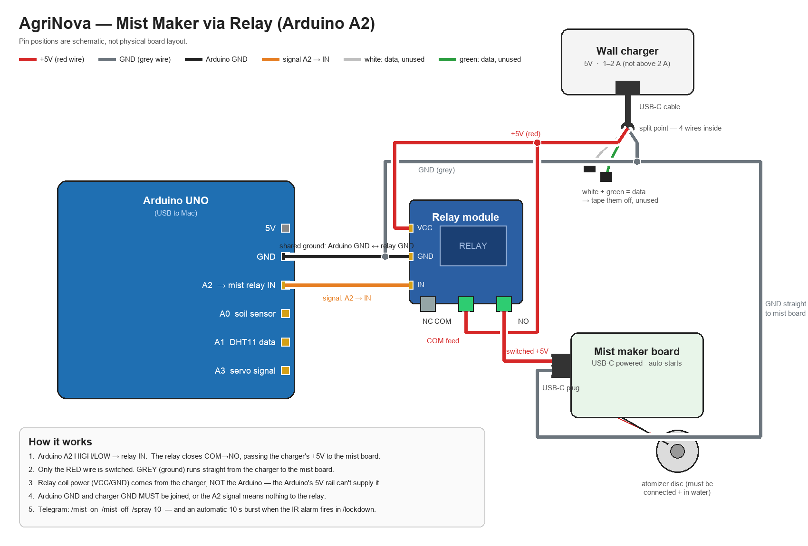
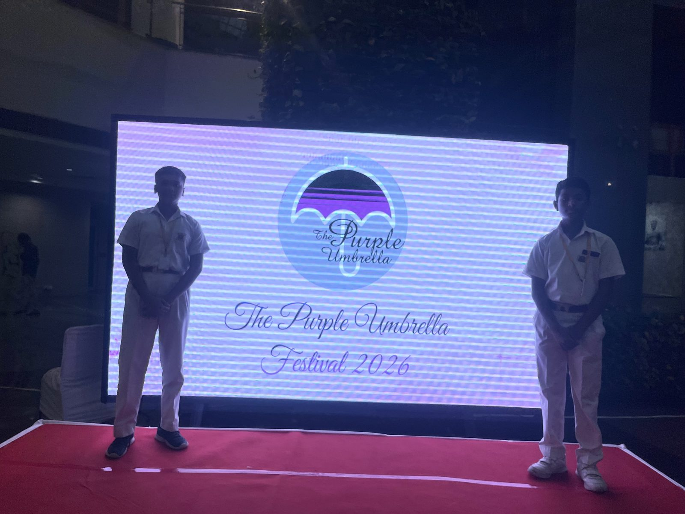
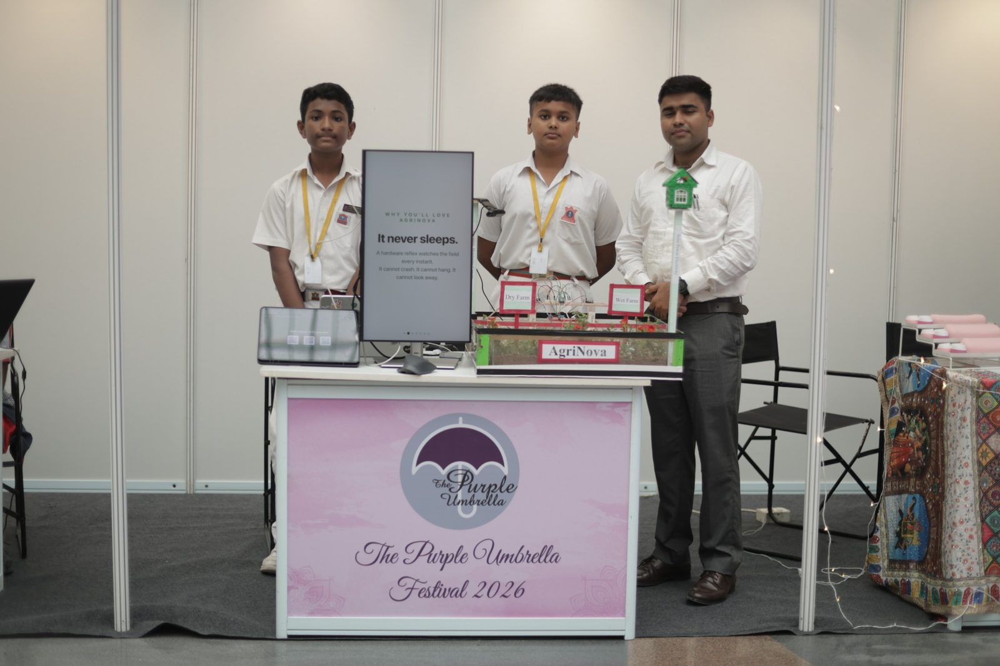
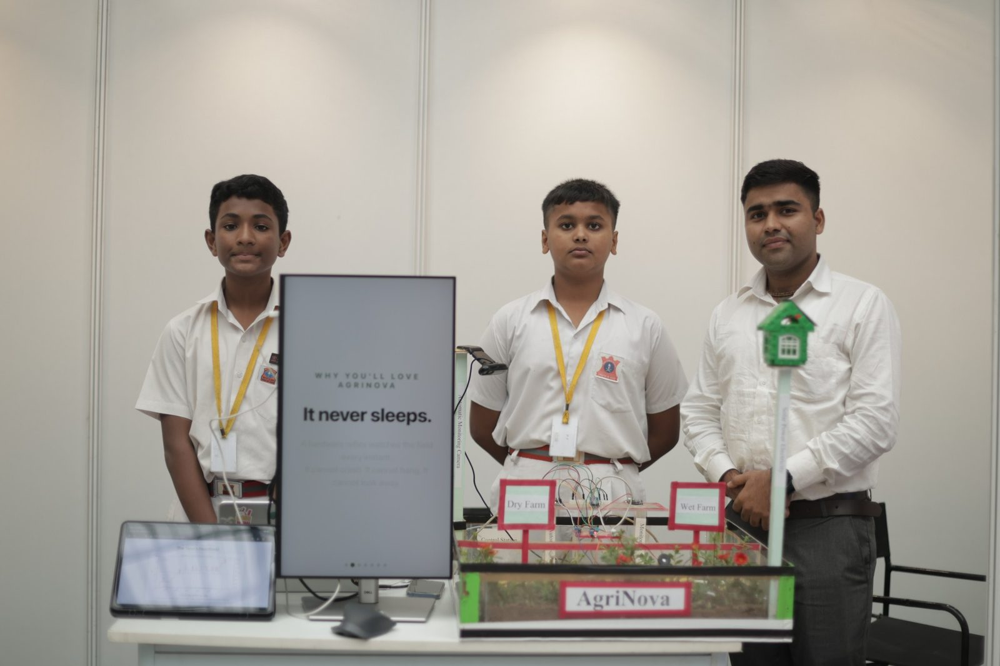
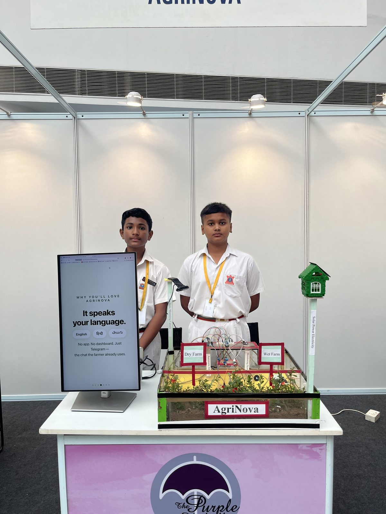
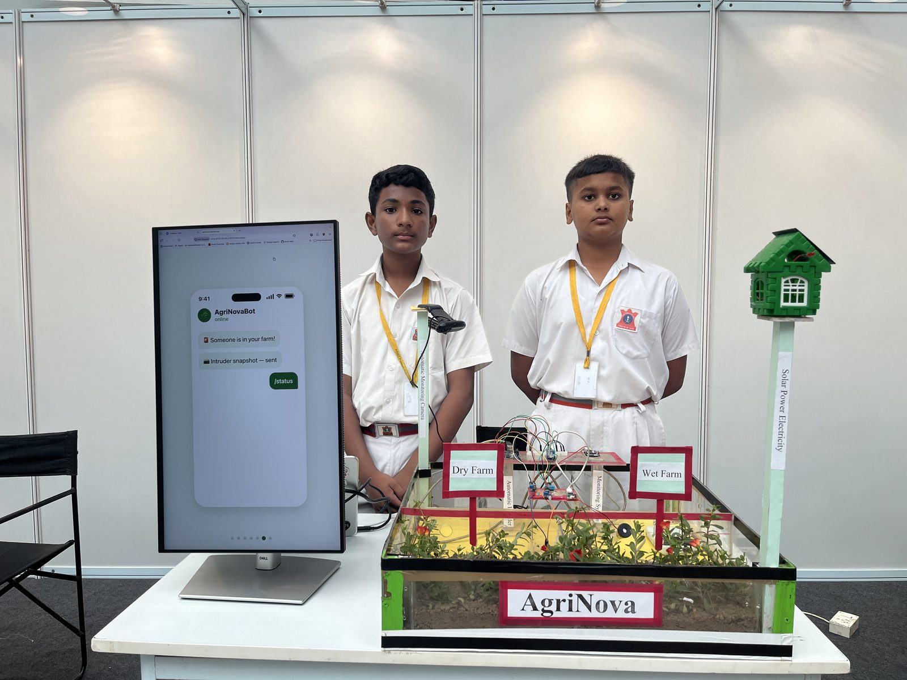
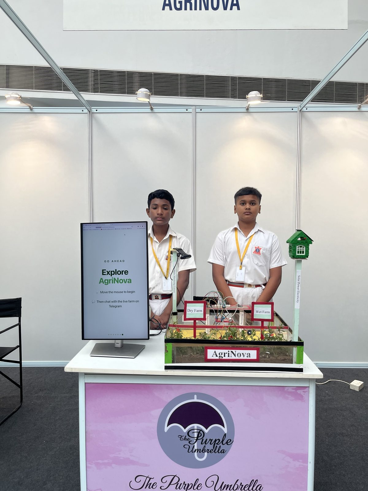
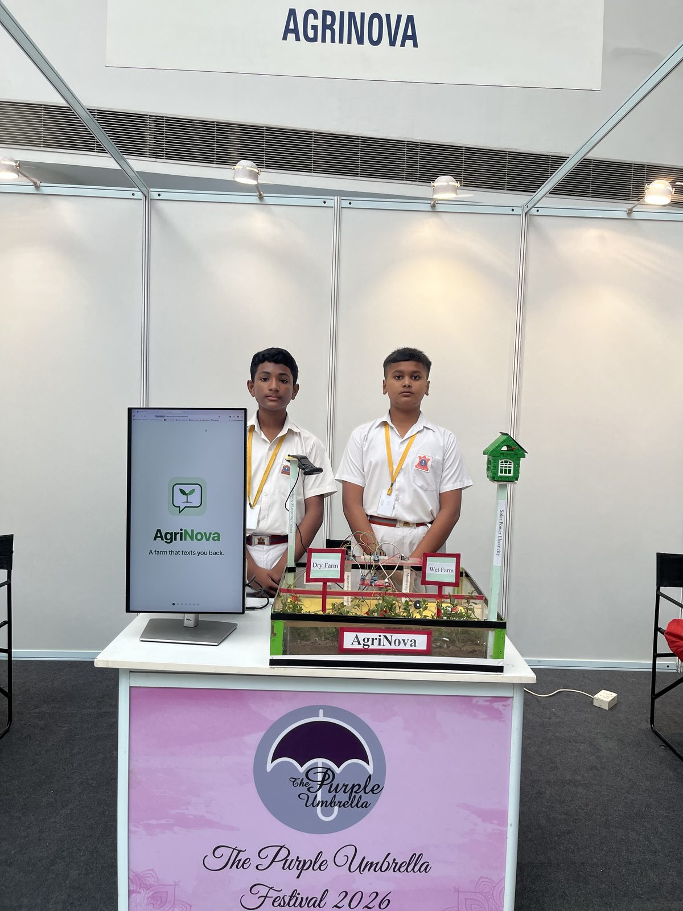
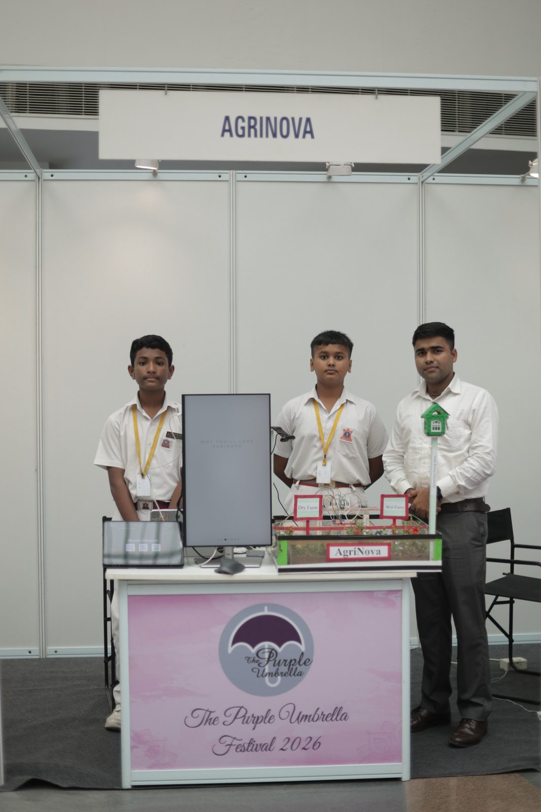

01 — ArchitectureThree parts, each doing what it's best at
The safety-critical path is pure hardware — synchroniser → edge detector → hardware cooldown → UART. It cannot crash, needs no operating system, and keeps detecting even if every computer in the system goes down. Software adds the intelligence: cameras, forecasts, graphs, language.
02 — The logicEvery decision, in plain English
The problem: the mist maker needs more electric current than an Arduino pin can safely supply. Feeding it straight from the Arduino would burn the pin.
The fix — a relay: a relay is just an electrically-controlled switch. The mist maker gets its power from its own 5 V wall charger, and that power line passes through the relay's switch contacts. The Arduino only flips the switch — it never carries the load. Our relay is active-LOW: pulling pin A2 LOW closes the switch.

the actual wiring — Arduino → relay → mist makerEvery rule above runs automatically, 24/7 — the farmer only sees the results on Telegram. Decisions are deliberately rule-based and explainable; AI assists (crop recognition, speech) but never decides.
03 — CapabilitiesWhat it does
Intruder detection
IR → FPGA in microseconds → Telegram alert, photo in ~2 s, 5 s video, and a mist burst to scare the animal off.
Emergency calls
Intruder at 2 AM? The phone rings — a real Telegram call from "AgriNova Farm" that says what's wrong, in your language.
Call your farm
Dial the farm like a person: it answers, speaks the live status, shows the field on video, and obeys spoken commands — no typing, no reading.
The farm speaks
/voice — live status as a voice note, in natural neural voices: English, हिंदी or తెలుగు.
Crop vision
/crop — a 5 MB on-device model (2,100+ species, ~0.2 s, zero cloud) names the plant and checks the soil against that crop's happy range. Light enough for a Raspberry Pi.
Closed-loop irrigation
Sprays when soil is dry, stops the moment the target moisture is reached — checked every 0.2 s.
Weather-aware
Scheduled sprays check the forecast — rain likely in 6 h? Skipped, water saved. Auto-mist always trusts the soil sensor.
Hindi & Telugu
Alerts in हिंदी, తెలుగు, or Telugu in English letters — switch from chat with /lang.
Tamper alarm
Camera yanked mid-recording? CRITICAL alert with the partial clip as evidence.
Data & graphs
Every reading logged. /graph sends a 24 h chart, /summary a daily digest.
Button UI
/menu gives tappable buttons — no typing, no app to install, no subscription.
Self-healing
USB dropouts, camera loss, network errors — everything reconnects and reports honestly.
Schedules
/schedule 07:00 10 — daily sprays, persisted across restarts, rain-checked.
Setup wizard & message volume
/setup — five tap-to-answer questions. /messages 10 caps routine updates; alarms always come through.
Camera, anywhere
Uses a Windows node when present — otherwise captures photos and videos on the host itself.
04 — In actionA real intruder event
🌱 34% (DRY) · 🌡️ 29.4°C · 💧 61%
Want to drive it yourself? Open the live terminal demo
05 — Bill of materials~₹2,500 all-in
| Part | Role | ≈₹ |
|---|---|---|
| VSDSquadron FM (iCE40UP5K) | Hardware intruder logic | 1200 |
| Arduino UNO | Sensors + relay | 400 |
| IR obstacle sensor | Detection | 50 |
| Soil probe + LM393 | Moisture | 80 |
| DHT11 | Temp / humidity | 80 |
| 5 V relay + USB mist maker | Irrigation | 410 |
| Any UVC webcam | Evidence | reuse |
Honesty note: our ≈67 % water-saving figure is a model-based prediction from the measured spray rate. A controlled dry-bed / wet-bed field trial is measuring it — we will publish the data either way.
06 — RecognitionPurple Umbrella Festival 2026 — Finalist
AgriNova was selected as a finalist at the Purple Umbrella Festival 2026 — a national climate-innovation festival held at the Dr. Ambedkar International Centre, New Delhi — where the team exhibited the live prototype with a two-screen interactive demo. Read the stage pitch transcript.
The stage pitch (5:51)







